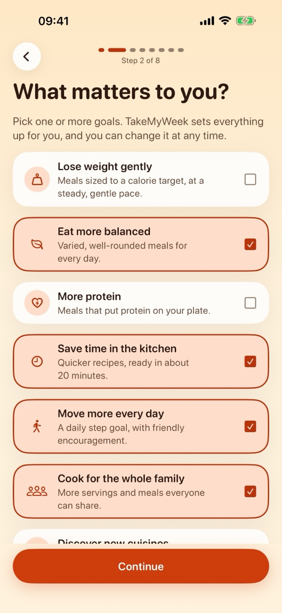
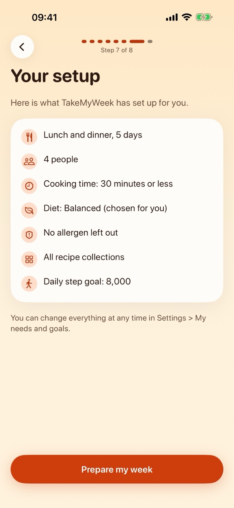
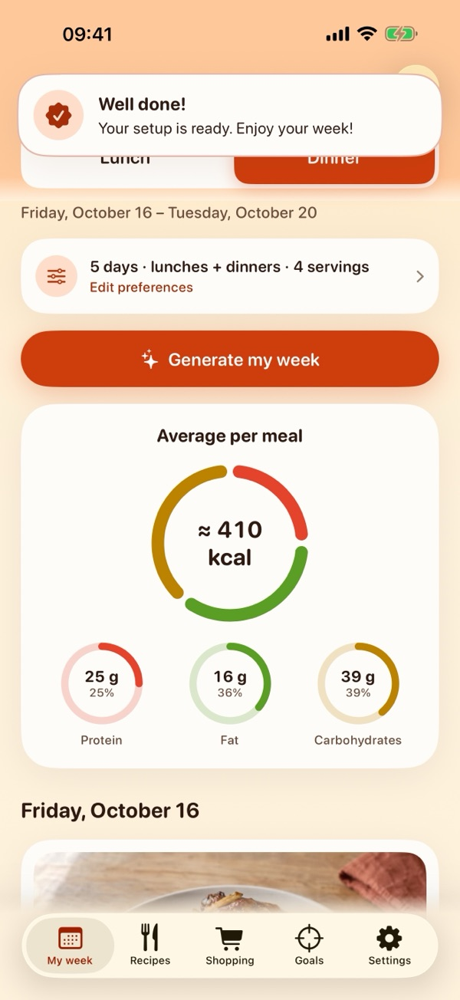
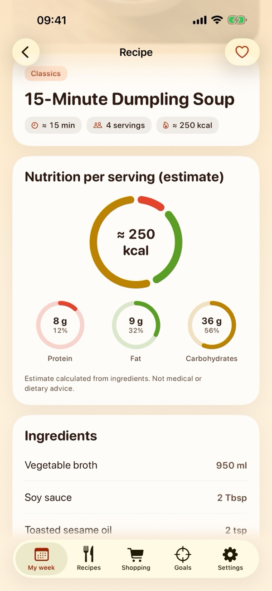
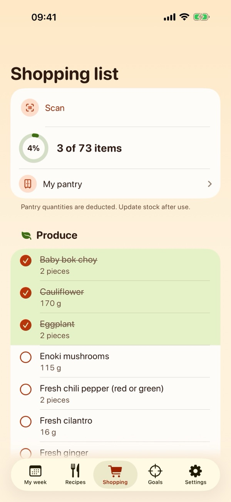
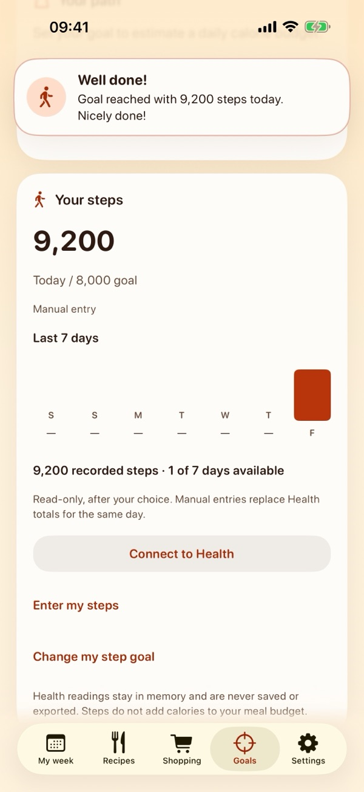

iPhone app · No account · No ads
TakeMyWeek
What’s on the menu this week? Answer a few questions and TakeMyWeek sets up your week around your needs: lunches and dinners, the grocery list sorted by aisle, and a little cheer when you reach your goals.
Your week, sorted
- Set up from your needs (version 2.2)Tell TakeMyWeek what matters to you: eating more balanced, saving time, more protein, cooking for the family, moving more or losing weight gently. A few questions, and your meals, diet, cooking time and goals are set up for you, with a short summary of the choices made. Change everything any time in Settings › My needs and goals.
- Cheers and gentle encouragement (version 2.2)A short message when you plan a week, finish your shopping list or reach your step goal, and a discreet card in Goals. In the app only, with no notifications.
- Lunches and dinners in one tapPlan 5 or 7 days, dinners only or lunches and dinners. Lock the meals you like, reshuffle the rest, or replace a single meal.
- One grocery list, sorted by aisleQuantities are added up for your servings and rounded to whole items. Deduct what is already in your pantry.
- More than 1,000 recipes in 10 collections (version 2.1)Classics, French, Chinese, Korean, Caribbean, African, easy 20-minute meals, light and protein-rich, and two new collections: Low calorie (under 400 kcal per serving, estimated) and Réunion Island. Every recipe shows estimated calories, protein, fat and carbs per serving.
- Your filters, respectedServings, a time limit, ten diets, excluded ingredients and allergens. The app never quietly loosens them.
- Goals (version 2.1, free)For adults: log your weight, set a target and get an estimated daily calorie target with safeguards, then choose one of ten diets for your next meals. Estimates only, not medical advice.
- Steps from Apple Health (version 2.1, optional)Read-only: the app reads your step count to show it next to your goals. It never writes to Health and your steps never leave your iPhone. You can also enter steps by hand.
- Barcode scan (version 2.1, Premium)Scan or type a barcode to see a product’s nutrition facts per 100 g from the open Open Food Facts database, then check it off your grocery list or add it to your pantry. Only the barcode is sent.
- 10 languages, metric or US unitsEnglish, French, Spanish, German, Italian, Portuguese (Brazil), Dutch, Japanese, Korean and Traditional Chinese.
- TakeMyWeek PremiumAn auto-renewable subscription, yearly with a free trial or monthly, unlocks generating and changing weeks, every recipe, advanced filters, the pantry and the barcode scan. New installations (version 2.1 and later) may see a welcome offer for 48 hours (see the Terms of Use). Without a subscription you can browse the recipe collections, keep reading your saved week and shopping list, and use Goals and steps.






Privacy Policy
Effective October 17, 2026 · applies to TakeMyWeek (formerly Dinner Ideas, CookCart and Weekbite) for iPhone, version 1.0 and later
What stays on your iPhone
Your meal plan, preferences (number of days, meals per day, servings, time limit, diet, excluded ingredients and allergens), pantry quantities, favorites and checked shopping items are saved in a file inside the app on your device. From version 2.1, the same file holds your Goals: the profile you enter (age, height, the sex used in the calorie formula, activity level, pace), your weight log and target, your chosen diet and the steps you enter by hand. From version 2.2, it also holds your answers to the “My needs” questions: your goals, household, meals, diet choice, allergens, cooking time, recipe collections and step goal. Recently scanned products are kept in a separate local cache (at most 200 products, for 30 days). None of this leaves your iPhone unless you choose to share or export it.
Congratulations and encouragement (version 2.2 and later)
Messages are chosen on your iPhone from the data above, such as your steps or your saved week; nothing is sent. They appear only inside the app, never as notifications. A small separate file in the app lists which congratulations have already been shown and whether the “My needs” invitation was seen, so that none is repeated. It holds nothing else, is excluded from iCloud and device backups, is never included in exports and is erased by Settings › Reset data. Congratulations about weight appear only with an adult profile, above the healthy-weight threshold and at a gentle pace; no message ever praises eating less.
Apple Health (version 2.1 and later)
If you tap Connect to Health and allow it, TakeMyWeek reads only your step count from Apple Health, read-only: it never writes anything to Health. The steps it reads are used to display your daily total and your step goal; they stay on your iPhone, are not saved in the app’s file, are not included in exports and are never sent to us or to anyone else. Health data is never used for advertising or marketing. You can stop access at any time in Settings › Privacy & Security › Health › TakeMyWeek, or from the Health app. If you do not connect Health, you can still enter steps by hand.
Barcode scanning and Open Food Facts (version 2.1 and later)
Barcode scanning is an optional Premium feature and the only feature of TakeMyWeek that connects to a service other than Apple. When you scan or type a barcode, the app sends only that barcode to the Open Food Facts database (world.openfoodfacts.org) over HTTPS, to retrieve the product’s name, brand, quantity and nutrition facts. The request carries no account, no cookie and no identifier; like any internet request it reveals your device’s IP address, and it names the app and its version. Your meal plan, preferences, goals, weight and Health data are never sent. The camera image is used on your iPhone only to read the barcode; it is not recorded or sent. Open Food Facts’ own privacy policy applies to its handling of requests. Product data comes from Open Food Facts contributors and is available under the Open Database License (ODbL).
When data leaves your device — only because you asked
- Share / Export: when you share your plan or shopping list, or export a backup, iOS sends the content to the app or place you pick. A JSON backup contains your plan, preferences, favorites, pantry, from version 2.1 your Goals profile, diet, weight log and hand-entered steps, and from version 2.2 your “My needs” answers. It never contains the steps read from Apple Health. Backups are not encrypted by TakeMyWeek: keep them somewhere safe.
- iCloud / device backups: like other app data, the app’s file may be included in your iPhone’s backups under your Apple Account settings.
- Barcode scan: only the barcode, as described above.
- Links: a link you tap in the app opens in your browser or the App Store, where that website’s own privacy policy applies.
Purchases and subscriptions
TakeMyWeek Premium is bought through Apple’s App Store. Apple processes the payment and manages the subscription under its own privacy policy. We never receive your name, your Apple Account or your payment details. The app only asks Apple’s purchase system on your iPhone whether a subscription is active. For the welcome offer (version 2.1 and later), the app stores in your iPhone’s keychain the time of its first opening and whether the offer applies to this installation. This item stays on this device, is not synced with iCloud and is never sent; it may remain on the device after the app is deleted, so that the 48-hour window is not restarted by reinstalling.
Network
The recipe catalog is built into the app, and the app sends nothing to us. It contacts the App Store to show the subscription offers and to check or restore a purchase, and, only when you use the barcode scan, Open Food Facts as described above. Everything else works offline.
Children
TakeMyWeek collects no information from anyone, including children. Goals (weight and calorie target) are for adults aged 18 and over; the app refuses a profile under 18.
Health information
Calories, macronutrients, diet labels, calorie targets and step goals are estimates and general information, not medical or dietary advice. The calorie target uses a published formula with safeguards (minimum daily intake, gentle or moderate pace, no weight-gain goal); it cannot predict your results. If you are pregnant or breastfeeding, have a medical condition, or have or had an eating disorder, talk to a health professional before changing your diet; if you tell the app so in your profile, it does not calculate a calorie deficit. Diet and allergen filters are based on ingredient labels in our catalog: always check product packaging for allergens and cross-contamination.
Deleting your data
Data stays on your iPhone until you replace it or delete the app. Settings › Reset data clears the active data (plan, preferences, favorites, pantry, shopping checks, Goals, “My needs” answers, the list of congratulations already shown and the scanned-product cache) but keeps a local recovery copy on the device; delete the app (rather than offloading it) to remove everything stored by the app. The welcome-offer item in the keychain may remain on the device, as explained above. Steps stay in the Health app, which you control. Exported backup files are yours to delete separately. Because we hold nothing on any server, there is nothing to request from us.
Changes and contact
If this policy changes, the new version will be posted on this page with a new effective date. Questions: see the contact address below.
Terms of Use
Effective October 17, 2026
TakeMyWeek is licensed under Apple’s standard Licensed Application End User License Agreement.
TakeMyWeek Premium
- Premium is an auto-renewable subscription, offered yearly (with a free trial for new subscribers, when available) or monthly. Prices are shown in the app before you buy and depend on your country.
- Payment is charged to your Apple Account when you confirm the purchase. The subscription renews automatically unless it is cancelled at least 24 hours before the end of the current period.
- You can manage or cancel your subscription at any time in your App Store account settings. Deleting the app does not cancel a subscription.
Welcome offer (version 2.1 and later)
- On a new installation of version 2.1 or later, the Goals tab may show a welcome offer for 48 hours after the app is first opened on that iPhone. It is not shown on an iPhone that already had TakeMyWeek data, and it disappears when the 48 hours are over or if you already subscribe.
- It is a yearly subscription whose first year is paid upfront, in a single payment, at a reduced introductory price; it then renews at the regular yearly price shown before purchase, unless you cancel at least 24 hours before the end of the first year.
- Apple decides eligibility: an introductory offer can be used once per subscription group, so it may be unavailable if you already used a free trial or another introductory offer of TakeMyWeek Premium.
Recipes and nutrition
Cooking times, calories and macronutrients are estimates computed from the ingredients; they are not medical or dietary advice. Recipes have not all been tested in a kitchen. Recipe pictures are illustrations. Always check packaging for allergens.
Goals, steps and product data
Goals, calorie targets and step goals are general estimates for adults and do not replace advice from a health professional. Product information from the barcode scan comes from the open, collaborative Open Food Facts database (ODbL); it may be incomplete or out of date: check the packaging.
Support
We read every message and usually answer within a few days.
balustreyonni@gmail.com
- How do I change my needs and goals?
- Go to Settings › My needs and goals: the questions open filled in with your current answers and settings. Saving updates your settings and goals; your saved week stays as it is until you prepare a new one. Changing the number of servings is part of Premium, as in the week’s preferences.
- Do the congratulations send notifications?
- No. They appear only inside the app, for a few seconds or until you tap them, and each one is shown once.
- "Not enough compatible recipes" — why?
- Your filters (time limit, diet, excluded ingredients or allergens) leave fewer recipes than meals in your week. The app tells you whether lunches or dinners are missing and never loosens your filters on its own: raise the time limit, choose 5 days instead of 7, plan dinners only, or remove an exclusion. When it sets things up from your needs, it only adjusts what it chose for you (such as the diet or the cooking time) and says so in the summary; your allergens, a diet you picked and your collections are never changed.
- How do I plan lunches as well as dinners?
- In your week’s preferences, choose lunches and dinners. Your week then has a Lunch tab and a Dinner tab; locked meals stay as they are when you generate again.
- How do I keep a meal and reshuffle the rest?
- Tap Lock on the meals you want to keep, then generate your week again. Use Replace to swap a single meal.
- How do Goals work?
- Open the Goals tab, enter your profile (adults only), your current and target weight and your pace. The app estimates a daily calorie target with safeguards and lets you choose one of ten diets for your next meals. Your current week stays as it is until you generate again.
- How do I connect or disconnect my steps?
- In Goals, tap Connect to Health and allow reading the step count. To stop, go to Settings › Privacy & Security › Health › TakeMyWeek, or use the Health app. If there is no data or access is off, you can enter steps by hand.
- The barcode scan does not find my product.
- The scan needs an internet connection and a TakeMyWeek Premium subscription. If a product is not in Open Food Facts, check the barcode or try another product; you can also type the barcode digits.
- I do not see the welcome offer.
- It appears in the Goals tab only on a new installation of version 2.1 or later, during the 48 hours after the first opening, if Apple confirms that your account is eligible and you are not already subscribed.
- Why does the shopping list say 1 avocado when the recipe uses half?
- The list rounds whole items up so you buy what you need; recipe pages show exact amounts for your servings.
- Can I use metric units?
- Yes: choose metric or US units in Settings, in any of the 10 languages.
- How do I manage, cancel or restore my subscription?
- Manage or cancel it in the Settings app of your iPhone: tap your name, then Subscriptions. On a new device, open TakeMyWeek, go to Settings › Subscription and tap Restore purchases.
- What can I do without a subscription?
- You can browse the recipe collections, keep reading your saved week, its recipes and your shopping list, and use Goals and steps. Generating or changing a week, opening other recipes, advanced filters, the pantry and the barcode scan are part of Premium.
- How do I move my data to a new iPhone?
- Settings › Export JSON backup creates a backup file; open it with Settings › Import JSON backup on the new device. Steps from Apple Health are not in the backup: connect Health again on the new iPhone.
En français
Présentation, politique de confidentialité, conditions d’utilisation et assistance : version française du site. Accès direct à la politique de confidentialité.